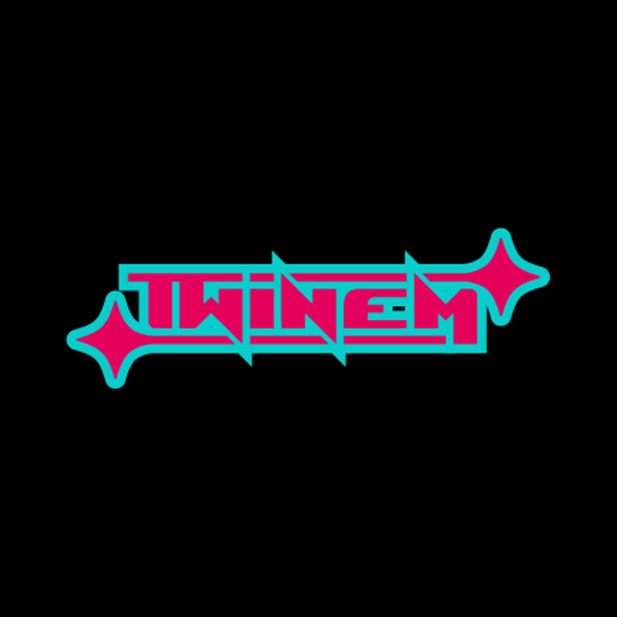
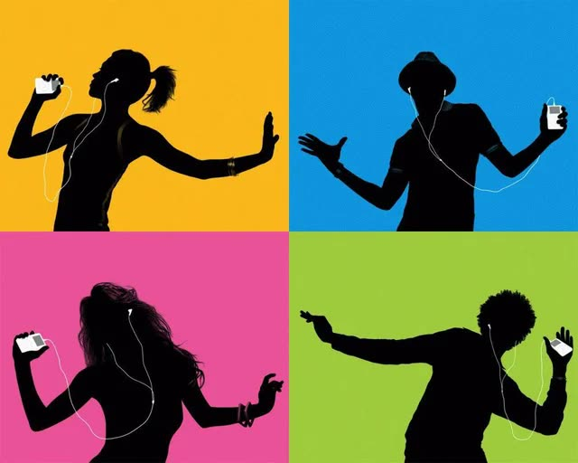
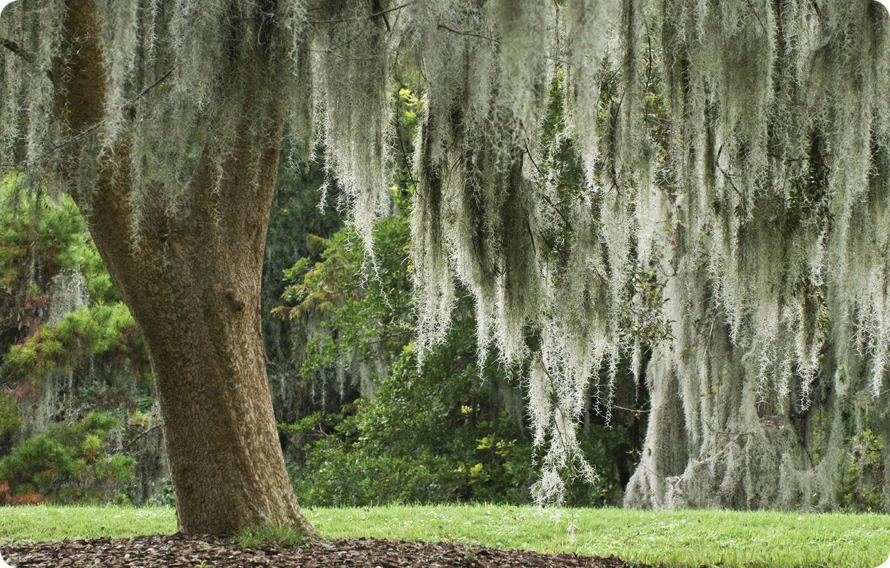
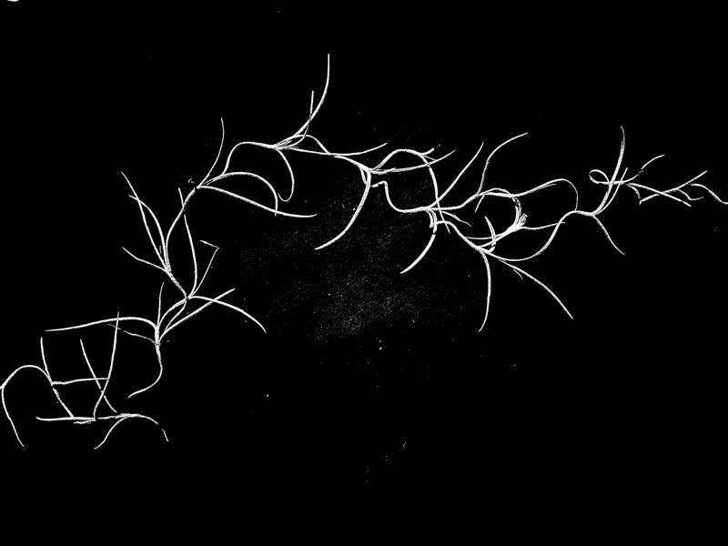
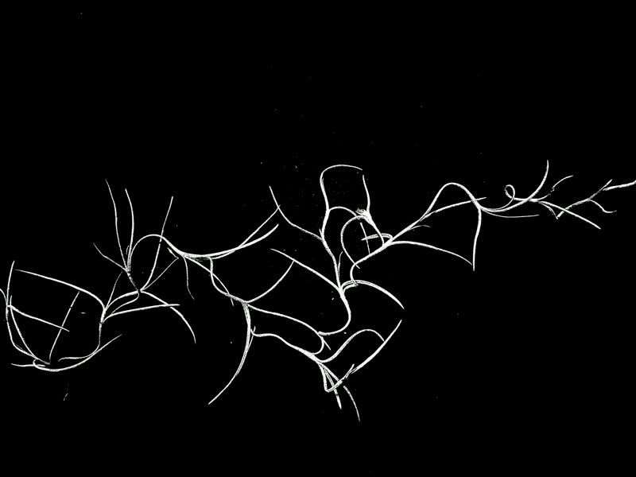
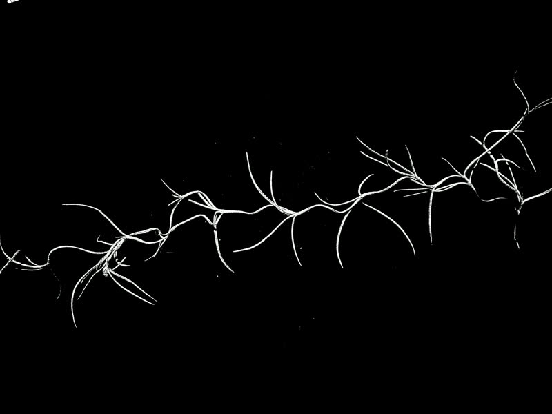
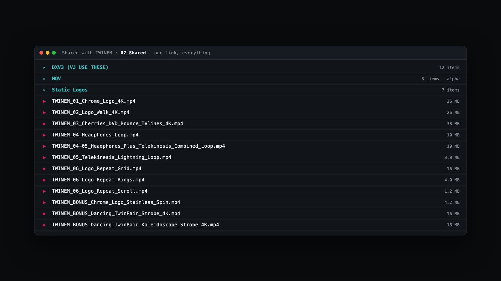

TWINEM × Ibiza Boat Rave
I made a Y2K visual pack of six loops for TWINEM, a twin DJ duo, for their set at Boston Event Guide's Seaport boat rave. I scoped it, built it, and delivered it in a 96-hour sprint. Every loop uses their exact brand colors. Zero AI-generated visuals.
Who is TWINEM?

TWINEM (@twinemmusic) is a twin-sister DJ duo on the East Coast playing house, bass, and EDM. The twin thing is the brand: matched but distinct. Y2K nightlife, neon pink and teal on black, chrome, cherries. My job was to turn that into moving visuals for their boat-rave set.
We walked into the call already sharing the same world.
I start with a branding questionnaire I built. It asks an artist to describe their own world in their own words and colors. TWINEM filled it out the same evening, so the call went straight to the work. We locked six visuals. Face-forward shots were out, so heavy Y2K distortion became the fix.
One question before any pixels: what screen is on that boat? A standard 4K TV. 3840×2160, locked.

Six loops, one sprint, zero AI imagery.
Six seamless 4K loops in their exact colors, pink #E4175E and teal #3AC0C3, pulled straight from their brand's source files, never eyeballed: chrome logo, twin silhouettes, TV-lines cherries, dithered headphones, twin telekinesis, and logo tile wall. They play around 128 BPM, so the loops are cut for that speed.
The porch footage was too dark to pull a clean matte, so I exported a blown-out copy as a guide and cut the silhouettes out of the original. The two twins are really one twin, duplicated in post with a time offset. Their boots, a brand signature, stay in their exact pink.
Their logo, dipped in chrome.
I built the 3D logo in Blender from their true logo vector. Slow wobble, still camera, seamless loop. Chrome mirrors whatever is around it, so I built a pink-and-teal liquid-swirl world out of their own merch colors. The logo reflects their brand as it turns.
I directed. They filmed. Nobody was in the same room.
I directed every shot from the other end of the phone: which lens, where the camera sat (propped on a soda can), the framing take by take. The group chat became a remote film set.
I did not describe the silhouette look in words. I sent a link to Apple's old iPod silhouette ads. It was exactly what they had been hunting for.

Client notes, turned around the same day.
Every note came back solved the same day. They wanted stronger scanlines on the logo walk (the thin horizontal lines old TVs drew). My heavier version just read as darker, so I went thinner-but-more. Their verdict on v3: one word, perfect.


Same cherries, two decades apart.
The cherries came from their own merch art. They bounce like the old DVD screensaver, driven by After Effects expressions, small rules of code, not hand animation.
That is why the revision was instant. They picked the retro treatment on sight, then asked for the flash to hit every third bounce instead of every fifth. Because the animation is code, that was a one-number change.
The electricity is Spanish moss from a morning walk.
The telekinesis shot needed electricity between the twins. I planned to draw squiggles on paper and flip them stop-motion style. Then on a morning walk I saw Spanish moss, already drawn. I shot it that way instead: eight frames, rearranged by hand between each one, white on black, cycled as a flicker.
It works because moss strands and electricity share the same fractal structure. Nature drew the effect.








A custom coded tool, built mid-sprint.
Dithering is the chunky dot-pattern pixelation old screens used to fake shades of color. The plugins that do it well were too expensive, so I wrote my own tool in about an hour and tuned it to their palette. AI helped write the code. What it puts on screen is their real footage, dithered. Never AI imagery.

I built a wrapper on this tool just for the TWINEM brand and gave it to them for free. Their wordmark on the chassis, their colors on the keys, both signature looks from the pack. Their song loops while you work, and any video captured comes out with the music in the file.
The pixel itself went through a revision. The first build drew square pixels. Then I traced their four-point star into a vector and made it the unit the whole picture gets drawn from. Every frame is TWINEM at every scale.
The deeper purpose: they and their fans now own a camera that makes TWINEM visuals in real time. It is audio reactive, so the picture pulses to their music. Their aesthetic became an instrument anyone can play.
Their face-shyness became the aesthetic.
They were not comfortable with their faces huge on a venue screen, and there was no time to reshoot. The fix came from their own brief: they asked for Y2K, so I pushed hard into pixelation and dithering, which made them unidentifiable AND more on-brand at once.
One folder, built like I was the one receiving it.
The pack was complete Saturday morning, hours before soundcheck. Every loop came in multiple formats, named so a stranger could tell which is which, in one shared folder.
I VJ myself (a VJ runs visuals live at shows), so I built the folder I would want handed to me. Everything is pre-keyed with transparent backgrounds. I included DXV3 copies, the native format of Resolume, the software VJs run, so the 4K loops play smooth live.

A few extra gifts, to round out the pack.
They paid for six loops. I kept dropping extras into their folder at no charge: two more logo walls, a stainless-steel spin on the chrome, and two dancing loops cut from footage too good to waste. The walls and the spin came out of my own custom software.
What shipped, and what's next.
Shipped
Twelve pieces from a six-loop brief: the six core loops in TWINEM's official colors, two bonus dancing loops, a third logo-wall variant, and a stainless-steel spinning logo. Every clip in three formats (mp4, alpha MOV, DXV3), plus a static logo kit and their own passcode-locked copy of the dither tool. First contact to pack-complete in 96 hours.
Locked for the next show
The 3D logo has more moves in it, and every project file is archived, so the next build starts fast. The whole set can also render as one long video that runs itself.
Four days, three people, one world.
Who did what
Tool chain
↓
Scoped call (screen specs first, six loops locked)
↓
Blender (the 3D chrome logo)
↓
Premiere (cutting the silhouettes out of night footage)
↓
After Effects (composites, scanlines, seamless loops)
↓
dither-lab, my own tool (TWINEM-tuned Y2K pixelation)
↓
My own custom software (the logo walls + stainless spin)
↓
Spanish moss, photographed (became the electricity)
↓
Resolume Alley (DXV3 encodes for the VJ)
↓
Shared-folder delivery (named, labeled, confirmed)
First contact Monday evening → pack complete Saturday 9:42 AM. August 4-8, 2026.